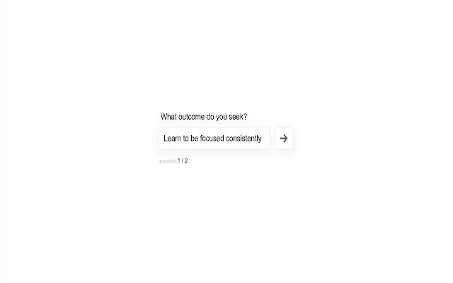

Iuliu Pop
A full-stack software engineer that overflows with curiosity and loves challenging problems. Iʼve designed and built solutions using the JavaScript, Ruby and Golang ecosystems.
I recently created Hypha, an open-source observability framework for distributed systems.

Hypha is an open-source observability framework for distributed systems that combines the context of traces with the detail of logs.
Hypha deploys an end-to-end telemetry pipeline that sets up distributed tracing, aggregates existing logs, and correlates logs with traces. This facilitates a powerful debugging workflow using Hypha's simple UI.
READ THE HYPHA CASE STUDYOther projects
-

Rekwest Bin
An application for receiving & debugging webhooks deployed to AWS (Golang, EC2, CloudFormation, Nginx)
-

Reaction
Trello-like collaboration app (MongoDB, Express, Node.js, React, Redux)
-

Effortless
Browser extension that helps you stay focused when interacting with the Web (Javascript, Webpack, Cypress.io)